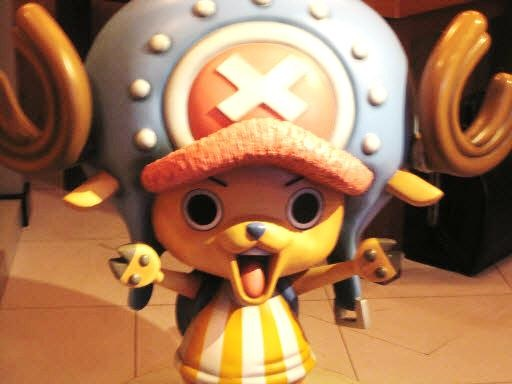

海賊王人物介紹
圖片
角色
介紹

Tonytony Chopper
草帽海賊團船醫。是一隻有藍鼻子的馴鹿醫生，因為吃下的「人人果實」讓他得到了能變成獸人的特殊能力，夢想是透過學習醫術而讓自己成為萬靈藥。
Roronoa Zoro
草帽海賊團二把手兼戰鬥員。他立志成為世界最強劍士，以雙手持刀、嘴上再咬一把刀的三刀流戰鬥風格聞名。
Franky
草帽海賊團船匠，原佛朗基家族族長。是一名改造人，全身上下充滿各種機械裝置和武器。